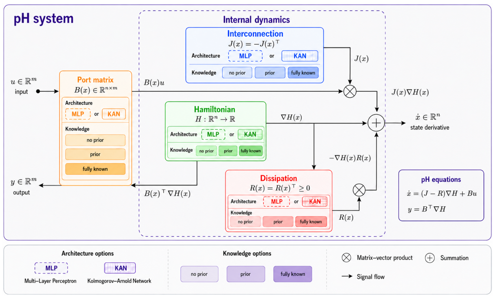
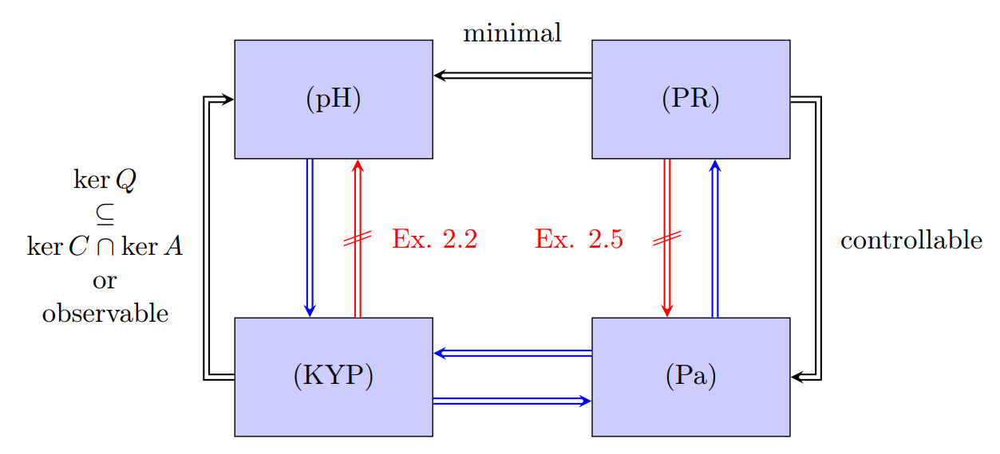
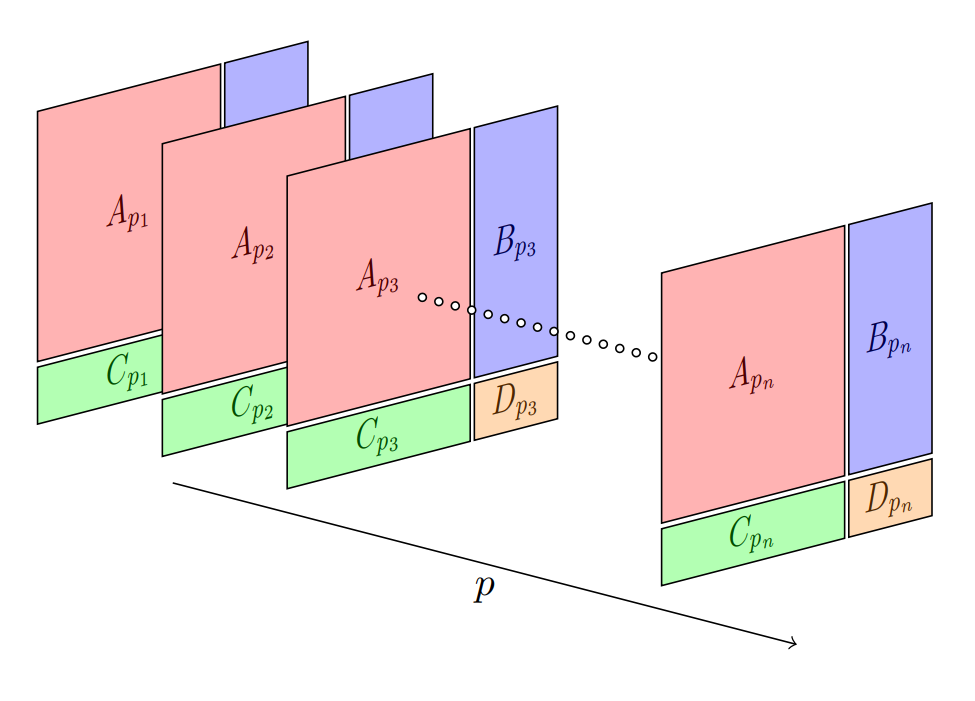
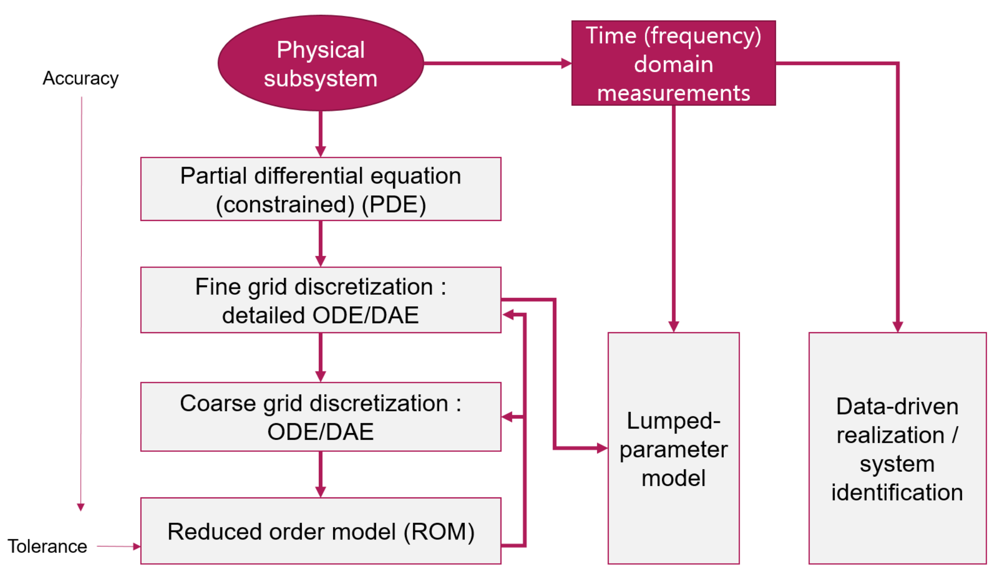

Research
Many technical systems, from electrical machines to flexible structures, are governed by physical principles such as energy conservation, dissipation and interconnection. Yet purely data-driven models often ignore this structure, and purely physics-based models are often too costly or too incomplete to be used in practice.
My goal is to build models that are learned from data and respect the physics: models that are stable by construction, interpretable, and cheap enough to power digital twins, estimation and control.
My work is both theoretical (structure, passivity and dissipativity of port-Hamiltonian systems, numerical linear algebra) and computational (learning and reduction algorithms, software and benchmarks), and it is motivated by industrial applications.
Physics-informed learning and system identification

I develop machine-learning frameworks that embed physical structure and prior scientific knowledge. Starting from linear pH realizations inferred from time-domain data and greedy data collection, my recent work targets nonlinear systems with structure-preserving neural networks, Kolmogorov-Arnold networks and diffusion models, and asks how much data and model capacity are needed (neural scaling laws). I also work on a benchmark platform for pH systems to compare methods fairly.
- PH-Symb: Sparse symbolic identification of nonlinear pH systems using Kolmogorov-Arnold networks (arXiv:2611.09334)
- PH-KAN: Port-Hamiltonian Kolmogorov-Arnold Network (arXiv:2606.14708)
- Target parameterization in diffusion models for nonlinear spatiotemporal system identification (arXiv:2604.17566)
- Nonlinear pH system identification from input-state-output data, ISO-pHNN (Physica D, 2026)
- Neural scaling laws for learning-based identification of nonlinear systems (IEEE OJ-CSYS, 2026)
- An overview on recent machine learning techniques for port-Hamiltonian systems (Physica D, 2020)
- A greedy data collection scheme for linear dynamical systems (Data-Centric Engineering, 2022)
- A non-intrusive method to inferring linear pH realizations using time-domain data (ETNA, 2022)
- Computing the nearest scattering passive system (Electronic Journal of Linear Algebra, 2026)
Port-Hamiltonian systems theory

Port-Hamiltonian (pH) systems describe energy-based, modular models in which stability and passivity follow from the structure. I study how pH systems relate to classical notions such as passivity, positive realness and dissipativity, in continuous time, discrete time, descriptor and time-varying settings, together with the numerical tools to compute and compare such models (minimal realizations, nearest scattering passive systems).
- Relationship between dissipativity concepts for linear time-varying pH systems (MCSS, 2025)
- On discrete-time dissipative pH (descriptor) systems (MCSS, 2024)
- The difference between pH, passive and positive real descriptor systems (MCSS, 2024)
- A geometric framework for discrete-time pH systems (PAMM, 2023)
Model order reduction

Large models need to be compressed before they can be simulated in real time or used for control. I work on minimal realizations of multi-input multi-output systems, reduction based on matrix polynomials and solvents, and data-driven rational interpolation of parametric systems.
- Snapshot-driven rational interpolation of parametric systems (Automatica, 2026)
- Numerical methods to compute a minimal realization of a pH system (arXiv:1903.07042)
- A novel recursive algorithm for inverting matrix polynomials via a generalized Leverrier–Faddeev scheme (Mathematics, 2025)
- Model reduction based on matrix polynomials (IEEE ARSO, 2018)
Digital twins and applications

I have worked on hierarchical, physics-based models of electrical machines and large drives for digital twins, in collaboration with industrial partners, as well as on flexible structures and power-system security control. With I. V. Gosea, I co-edited the book Physics-Based and Data-Driven Modeling for Digital Twins (Springer, 2026).
- Physics-Based and Data-Driven Modeling for Digital Twins (co-edited book, ICIAM2023 Springer Series, vol. 8, 2026)
- Hierarchical modeling for an industrial implementation of a digital twin for electrical drives (book chapter, Springer, 2026)
- Simulations in a digital twin of an electrical machine (arXiv:2207.02171)
- Application of data-driven realizations to pH flexible structures (IFAC-PapersOnLine, 2021)